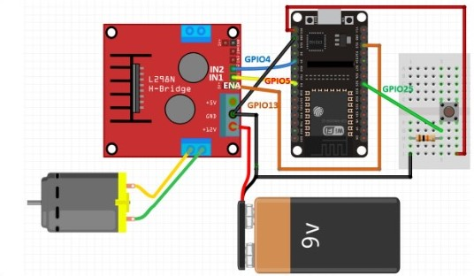

SISTEMA DE IRRIGACIÓN
Nunca he sido amiga de las plantas, no soy buena para cuidarlas, más que todo no las riego, es por eso que se me ocurrió una forma de no estar pendiente de ella. Básicamente lo que haremos será crear un sistema de riego automtizado. Como adición le agregaremos un chatbot de telegram, este nos dirá cuando emepiece y deje de regar, además también nos da la humedad si es que así lo cosnultamos. Este ha sido mi proyecto favorito, planeo ir agregandole más cosas e iré actualizando por aquí. Recuerda siempre revisar el pintout de la placa que estes usando.
MATERIALES
-ESP 32
-Bomba de agua
-Fuente
-L298N (control de potencia del motor)
-Sensor de tierra
-Planta
-Manguera
-Jumpers
RECURSOS
Usaremos github y sus librerías para usar el telegram. Asimismo una guía de como crear un bot
Aquí te dejo el link:
https://github.com/witnessmenow/Universal-Arduino-Telegram-Bot
https://www.330ohms.com/blogs/blog/crea-tu-propio-bot-de-telegram-con-esp32
CONEXIONES
-El sensor de tierra al pin 34
-El ENA del l298N al pin 14
-El IN1 del l298N al pin 27
-El IN2 del l298N al pin 26
-Conecta los out1 y out2 a la bomba de agua (no importa el orden)
-Conecta en +12v del L298N, el positivo de tu fuente y a ground el negativo, asimismo, conecta un jumper del
GND de la ESP32 al del L298N.
Algo así:

CÓDIGO
En los include, donde haya "()" reemplazalo por "<>"
#include (WiFi.h) #include (WiFiClientSecure.h) #include (UniversalTelegramBot.h) #include (ArduinoJson.h) #define soil 34 const char* SSID = "SSID"; const char* password = "contraseña"; #define BOTtoken "tu token" #define CHAT_ID "ID" WiFiClientSecure client; UniversalTelegramBot bot(BOTtoken, client); int sensor; int motor1pin1 = 27; int motor1pin2 = 26; int motor1speed = 14; bool isWatering = false; void handleNewMessages(int numNewMessages) { for(int i = 0; i < numNewMessages; i++) { String chat_id = String(bot.messages[i].chat_id); if(chat_id != CHAT_ID) { bot.sendMessage(chat_id, "Usuario no autorizado", ""); continue; } String text = bot.messages[i].text; if(text == "/agua") { bot.sendMessage(chat_id, "Regando", ""); digitalWrite(motor1pin1, HIGH); digitalWrite(motor1pin2, LOW); analogWrite(motor1speed, 250); delay(500); analogWrite(motor1speed, 0); isWatering = true; } else if(text == "/status") { String statusMessage = isWatering ? "La bomba está regando." : "La bomba no está regando."; bot.sendMessage(chat_id, statusMessage, ""); } else if(text == "/stop") { if(isWatering) { digitalWrite(motor1pin1, LOW); digitalWrite(motor1pin2, LOW); analogWrite(motor1speed, 0); isWatering = false; bot.sendMessage(chat_id, "La bomba ha sido detenida manualmente.", ""); } else { bot.sendMessage(chat_id, "La bomba ya está detenida.", ""); } } else if(text == "/humedad") { String humedadMessage = "El nivel de humedad actual es: " + String(sensor) + "%"; bot.sendMessage(chat_id, humedadMessage, ""); } } } void setup() { Serial.begin(9600); // Conectar a WiFi Serial.print("Conectando a: "); Serial.println(SSID); WiFi.begin(SSID, password); client.setCACert(TELEGRAM_CERTIFICATE_ROOT); while(WiFi.status() != WL_CONNECTED) { delay(500); Serial.print("."); } Serial.println(""); Serial.println("WiFi conectado."); Serial.println("IP address: "); Serial.println(WiFi.localIP()); pinMode(motor1pin1, OUTPUT); pinMode(motor1pin2, OUTPUT); pinMode(motor1speed, OUTPUT); bot.sendMessage(CHAT_ID, "Bot iniciado", ""); } void loop() { sensor = analogRead(soil); sensor = map(sensor, 4095, 886, 0, 100); Serial.println(String("Nivel de humedad: ") + sensor + "%"); delay(500); int numNewMessages = bot.getUpdates(bot.last_message_received + 1); while(numNewMessages) { handleNewMessages(numNewMessages); numNewMessages = bot.getUpdates(bot.last_message_received + 1); } if(sensor <= 70 && !isWatering) { digitalWrite(motor1pin1, HIGH); digitalWrite(motor1pin2, LOW); analogWrite(motor1speed, 250); isWatering = true; bot.sendMessage(CHAT_ID, "Comenzando a regar", ""); } else if(sensor > 70 && isWatering) { digitalWrite(motor1pin1, LOW); digitalWrite(motor1pin2, LOW); analogWrite(motor1speed, 0); isWatering = false; bot.sendMessage(CHAT_ID, "Dejando de regar", ""); } }